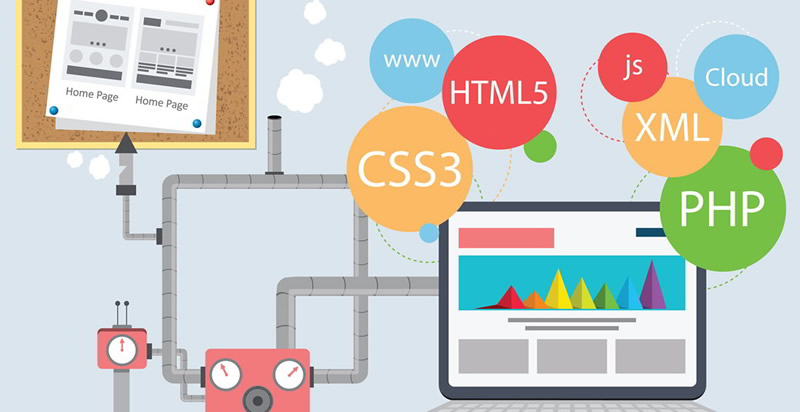

Web Technology: A technology which acts as in interface between web servers and clients. It includes markup languages, programming interfaces, standards to define document identity and display. Basically web technology is the process which allows two more computing devices over a network.
Dadas las circunstancias de la contingencia sanitaria por COVID-19 y ante el desconocimiento de cuanto pueda durar, considero adecuado replantear los proyectos finales que han de entregar al final de semestre. Seguiré por este medio publicando materiales, los días de clase, que muestren los conceptos necesarios para desarrollar los proyecto sin muchos inconvenientes; en cuanto tenga listo el grupo por facebook les haré llegar la invitación para que se integren; para esto último y ya con más calma les pido a TODOS por favor VUELVAN A ENVIAR un correo a tareas.jaor@gmail.com con su nombre, boleta y perfil de facebook (ELIMINÉ TODA LA BANDEJA DE ENTRADA DE ESTE CORREO). Difundan est información entre sus compañeros.
Mantengo la opción del punto extra con la página web de Tokio 2020.
Proyectos Finales - Sem. 2020/2
Ya envié invitaciones a todos aquellos que me compartieron su información. Revisen su correo.
Les comparto un ejemplo donde está integrado todo los conceptos revisados sobre front-end en una pantalla de lo más común: un login.
Les comparto ejemplos de PHP básico, POO con PHP, etc.
Envío de datos desde un formulario HTML a un servidor web PHP
Envío de datos desde un formulario HTML a un servidor web PHP, haciendo uso de Front-End -270320-, es decir, incluye frameworks y plugins.
Lo mínimo necesario para la implementación de AJAX con jQuery.
Nuestro nuevo amigo AJAX con un viejo conocido: JSON.
Ejemplo de como conectarse a MySQL desde PHP y las operaciones CRUD. Ambas en su expresión más mínima.
Ejemplos de las variables de sesion en PHP y como aplicarlas a un pequeño modelo para restringir el acceso a ciertos contenidos.
Sesiones PHP
Control de acceso con sesiones PHP
Generación de PDFs desde PHP con ayuda de la clase FPDF.
Ejemplos FPDF
Web FPDF (Docs & Tuts)
Envío de correos desde PHP con ayuda de la clase phpMailer.
Ejemplos phpMailer
Web phpMailer (Docs & Tuts)
Ejercico CRUD. En esta primera etapa tiene implementado lo correspondiente al 'login'.
Continuamos con el ejercicio de CRUD, agrego la pantalla del alumno personalizada en lo que se refiere a su front-end y aprovechando bondades de materializecss.
Boleta:2020630001 / Contraseña: qwerty
Continuamos con el ejercicio de CRUD, agrego la funcionalidad de 'Crear Nueva Cuenta' con sus validaciones correspondientes.
Continuamos con el ejercicio de CRUD, agrego la funcionalidad de 'Editar' y 'Cambiar contraseña' del alumno con sus validaciones correspondientes.
Continuamos con el ejercicio de CRUD, agrego la funcionalidad de los 'Comprobantes' del alumno, que son la generaci´n de PDF y envío de correo. No se les olvide poner los datos de su cuenta de correo.
Continuamos con el ejercicio de CRUD, iniciamos el desarrollo de la sección correspondiente al usuario 'Admnistrador', su pantalla de acceso y el despliegue de su página principal.
Continuamos con el ejercicio de CRUD, se habilitan las opciones de 'PDF' y 'Correo' a cada alumno para el administrador. Update: agrego la funcion de 'ver' implementando la llamada AJAX desde el plugin 'confirm.js'
When a business needs a new website or they want to replace their existing one, they usually pass the project into the hands of a recommended web design and development agency. A sensible move. After all, most companies don’t have the in house expertise to tackle such a complicated project and one where the final result is critical in attracting new leads and generating product sales.
The creation of every website follows a clear web design process. A client who understands the basics of this process will appreciate what happens at each stage, will be clear about when the process can easily change direction and can communicate more knowledgeably with the web agency. Also, the more they know, the more the information provided by the web design team in their updates will make sense and prove more useful.
Behind The Scenes of the Web Design Process
Curso de Diseño Web
TML is the standard markup language for creating Web pages.
HTML5 Tutorial
HTML5 Cheat Sheet
CSS is used to define styles for your web pages, including the design, layout and variations in display for different devices and screen sizes.
Responsive web design makes your web page look good on all devices. Responsive web design uses only HTML and CSS. Responsive web design is not a program or a JavaScript. Web pages can be viewed using many different devices: desktops, tablets, and phones. Your web page should look good, and be easy to use, regardless of the device. Web pages should not leave out information to fit smaller devices, but rather adapt its content to fit any device
JavaScript is the programming language of HTML and the Web. JavaScript is easy to learn. JavaScript was invented by Brendan Eich in 1995, and became an ECMA standard in 1997. ECMA-262 is the official name of the standard. ECMAScript is the official name of the language.
The DOM is a W3C (World Wide Web Consortium) standard. The DOM defines a standard for accessing documents: "The W3C Document Object Model (DOM) is a platform and language-neutral interface that allows programs and scripts to dynamically access and update the content, structure, and style of a document."
JSON stands for JavaScript Object Notation. JSON is a lightweight data-interchange format. JSON is "self-describing" and easy to understand. JSON is language independent.
Vamos a integrar todos los conceptos revisados previamente para integrarlos en la creación de una página web informativa y para difusión de los Juegos Olimpicos Tokio 2020.
jQuery is a lightweight, "write less, do more", JavaScript library. The purpose of jQuery is to make it much easier to use JavaScript on your website. jQuery takes a lot of common tasks that require many lines of JavaScript code to accomplish, and wraps them into methods that you can call with a single line of code. jQuery also simplifies a lot of the complicated things from JavaScript, like AJAX calls and DOM manipulation.
Web oficial
W3Schools - jQuery
Código Facilito - Videos
Para agilizar el proceso de desarrollo de nuestra aplicación puede ser muy útil usar plugins hechos con la librería JavaScript jQuery, para así enfocarnos en otros aspectos que a veces dejamos de lado. El uso de los plugins en tu proyecto hace que su desarrollo sea mas ágil y puedas seguir mejorándolo.
A modern responsive front-end framework based on Material Design.
Web oficial
Código Facilito - Videos
Les comparto dos de los plugins que más uso en mi día a día, que van orientados a la validación de formularios para cuidar la información que llegará al servidor y lo correspondiente a la retroalimentación para con el usuario de nuestro sistema.
Hasta aquí tenemos suficiente material para hacer páginas totalmente funcionales, usables y presentables; sin embargo la inclusión de los formularios deja un hueco/oportunidad/necesidad de explorar que más se debería hacer con esa información que el usuario proporciona por este medio; la opción más común es enviarla a un servidor para que ahí se procese y/o almacene.
¿Qué es un servidor?
¿Qué es un servidor web?
Así pues para nuestro curso necesitamos un soporte de servidor web con Apache-MySQL(MariaDB)-PHP, estas tres tecnologías provienen del entorno UNIX y se pueden realizar intalaciones individuales y quizás también con una maldiciones de por medio; afortunadamente tenems alternativas más sencillas para su instalación/configuración como si de cualqueir otra aplicación se tratara. Hay que tener mucho cuidado en los requerimientos previos de cualquiera de las opciones que se elija, atención por si acaso ya tienen instalado algun otro servidor web (regularmente Tomcat para Java) ya que puede causar conflictos y en estos casos lo más recomendable es utilizar una máquina virtual. Entre las opciones disponibles tenemos:
Independientemente de cual sea su elección es importante que identifiquen el llamado 'directorio de publicación' ya que a partir de ahora para que funcionen los ejemplos que les comparta han de colocarlos en éste y la manera de 'pedirlos' será como http://localhost/proyecto/
PHP is a server scripting language, and a powerful tool for making dynamic and interactive Web pages. PHP is a widely-used, free, and efficient alternative to competitors such as Microsoft's ASP. PHP 7 is the latest stable release.
Web oficial
W3Schools - PHP
Código Facilito - Videos
AJAX allows web pages to be updated asynchronously by exchanging data with a web server behind the scenes. This means that it is possible to update parts of a web page, without reloading the whole page.
MySQL es un sistema de gestión de bases de datos relacionales de código abierto (RDBMS, por sus siglas en inglés) con un modelo cliente-servidor. RDBMS es un software o servicio utilizado para crear y administrar bases de datos basadas en un modelo relacional.